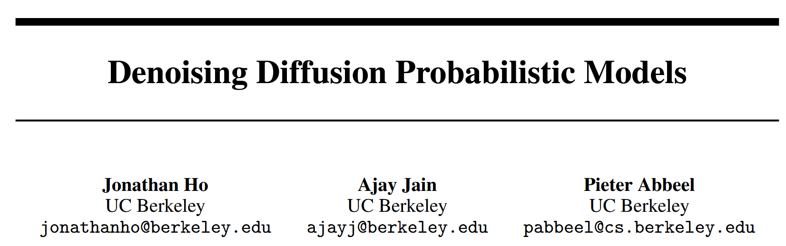

From Paper to Code: Understanding and Reproducing “Denoising Diffusion Probabilistic Models”#
 Code: GitHub Repository, Corresponding code: ../../../../code/Inv/denoising-diffusion-pytorch-main/demo.py
Paper Reading Notes#
Background#
In recent years, deep generative models have achieved impressive results in generating realistic data. Models such as Generative Adversarial Networks (GANs) [1], Variational Autoencoders (VAEs) [2], and Normalizing Flows [3] have been widely adopted in image, audio, and text synthesis. However, these methods often face various trade-offs between sample quality, likelihood estimation, and training stability.
Diffusion Probabilistic Models (DPMs), introduced by Sohl-Dickstein et al. [4], offer a conceptually simple alternative. A DPM gradually corrupts data with Gaussian noise and then learns to reverse this process using a neural network. While theoretically elegant, early diffusion models were not competitive in sample quality.

Method Overview#
This paper by Ho et al. (2020) [5] proposes a new formulation of diffusion probabilistic models that significantly improves their generation quality. The model consists of two processes:
1. Forward Process (Diffusion)#
The forward process gradually adds Gaussian noise to the original data \(x_0\), forming a sequence \(x_1, x_2, \dots, x_T\):
This simulates the data being slowly destroyed by noise.
It also allows sampling directly from any step \(t\) given the original \(x_0\):
We define the accumulated product of noise schedule as:
The forward process gradually adds Gaussian noise to the original data \(x_0\), forming a sequence of increasingly noisy images \(x_1, x_2, \dots, x_T\).
This is defined as a fixed Markov process:
Using a closed-form derivation, we can sample \(x_t\) directly from \(x_0\) without simulating all intermediate steps:
where the cumulative noise scale is:
This means we can generate a noisy version of the image at any timestep \(t\) using:
🔧 Code: q_sample Implementation#
The following function implements the equation above in PyTorch:
def q_sample(self, x_start, t, noise=None):
if noise is None:
noise = torch.randn_like(x_start)
sqrt_alphas_cumprod_t = extract(self.sqrt_alphas_cumprod, t, x_start.shape)
sqrt_one_minus_alphas_cumprod_t = extract(self.sqrt_one_minus_alphas_cumprod, t, x_start.shape)
return sqrt_alphas_cumprod_t * x_start + sqrt_one_minus_alphas_cumprod_t * noise
q_sample directly corresponds to the equation:
x_startis \(x_0\), the original clean image.tis the timestep.noiseis sampled from \(\mathcal{N}(0, I)\) if not provided.self.sqrt_alphas_cumprod[t]is precomputed \(\sqrt{\bar{\alpha}_t}\).self.sqrt_one_minus_alphas_cumprod[t]is precomputed \(\sqrt{1 - \bar{\alpha}_t}\).extract(...)applies the appropriate scalar to every image in the batch.
This function is used during training to corrupt the original image and teach the model how to denoise it.
2. Reverse Process (Denoising)#
The reverse process is trained to undo the diffusion:
Instead of predicting \(\mu_\theta\) directly, the authors propose to predict the noise \(\varepsilon\) that was added in the forward process.
Using this trick, the training loss becomes:
This resembles denoising score matching and simplifies training using standard stochastic gradient descent.
🧪 Code: forward() and p_losses() for Training#
def forward(self, img, *args, kwargs):
b, c, h, w, device, img_size = *img.shape, img.device, self.image_size
assert h == img_size[0] and w == img_size[1]
t = torch.randint(0, self.num_timesteps, (b,), device=device).long()
img = self.normalize(img)
return self.p_losses(img, t, *args, kwargs)
Sample random timestep \(t\).
Normalize \(x_0\) to \([-1, 1]\).
Compute loss using p_losses().
def p_losses(self, x_start, t, noise=None, offset_noise_strength=None):
noise = default(noise, lambda: torch.randn_like(x_start))
if offset_noise_strength := default(offset_noise_strength, self.offset_noise_strength) > 0.:
offset_noise = torch.randn(x_start.shape[:2], device=self.device)
noise += offset_noise_strength * rearrange(offset_noise, 'b c -> b c 1 1')
x = self.q_sample(x_start=x_start, t=t, noise=noise)
x_self_cond = None
if self.self_condition and random() < 0.5:
with torch.no_grad():
x_self_cond = self.model_predictions(x, t).pred_x_start
x_self_cond.detach_()
model_out = self.model(x, t, x_self_cond)
if self.objective == 'pred_noise':
target = noise
elif self.objective == 'pred_x0':
target = x_start
elif self.objective == 'pred_v':
v = self.predict_v(x_start, t, noise)
target = v
else:
raise ValueError(f'unknown objective {self.objective}')
loss = F.mse_loss(model_out, target, reduction='none')
loss = reduce(loss, 'b ... -> b', 'mean')
loss = loss * extract(self.loss_weight, t, loss.shape)
return loss.mean()
Add noise to \(x_0\) to get \(x_t\).
Predict \(\varepsilon\) (or \(x_0\), or \(v\)) from \(x_t\) using the network.
Compute MSE loss between prediction and target.
Weight loss by timestep and return the average.
This is a direct implementation of the loss:
where \(x_t = \sqrt{\bar{\alpha}_t}x_0 + \sqrt{1 - \bar{\alpha}_t} \cdot \varepsilon\).
## Contributions
The main contributions of this paper are:
1. Noise Prediction Parameterization: Instead of predicting the denoised image, the model predicts the noise added during diffusion, making training more stable and effective.
2. Simplified Training Objective: The authors propose a training loss that is simple to implement and closely related to denoising score matching.
3. High-Quality Image Synthesis: The model achieves state-of-the-art results on datasets like CIFAR-10 and LSUN, outperforming many GAN-based models.
4. Progressive Sampling Interpretation: The sampling process can be viewed as a form of progressive decoding, providing a new perspective on how diffusion models generate data.
## References
[1] Goodfellow et al., 2014. *Generative Adversarial Networks (GANs)*
[2] Kingma and Welling, 2013. *Auto-Encoding Variational Bayes*
[3] Dinh et al., 2016. *Real NVP*
[4] Sohl-Dickstein et al., 2015. *Deep Unsupervised Learning using Nonequilibrium Thermodynamics*
[5] Ho et al., 2020. *Denoising Diffusion Probabilistic Models*
# Demo
```python
import os
import sys
print("Current working directory:", os.getcwd())
target_path = os.path.abspath(os.path.join(os.getcwd(), "../../../code/Inv/denoising-diffusion-pytorch-main"))
print("Appending path:", target_path)
sys.path.insert(0, target_path)
#An example of a diffusion model
import torch
from denoising_diffusion_pytorch import Unet, GaussianDiffusion
model = Unet(
dim = 64,
dim_mults = (1, 2, 4, 8),
flash_attn = True
)
diffusion = GaussianDiffusion(
model,
image_size = 128,
timesteps = 1000 # number of steps
)
training_images = torch.rand(8, 3, 128, 128) # images are normalized from 0 to 1
loss = diffusion(training_images)
loss.backward()
# after a lot of training
sampled_images = diffusion.sample(batch_size = 4)
sampled_images.shape # (4, 3, 128, 128)
Current working directory: /home/xqgao/2025/MIT/Awesome-Computational-Imaging/chapters/Chapter10_DDPM
Appending path: /home/xqgao/2025/MIT/code/Inv/denoising-diffusion-pytorch-main
A100 GPU detected, using flash attention if input tensor is on cuda
/home/xqgao/anaconda3/envs/inr/lib/python3.12/contextlib.py:105: FutureWarning: `torch.backends.cuda.sdp_kernel()` is deprecated. In the future, this context manager will be removed. Please see `torch.nn.attention.sdpa_kernel()` for the new context manager, with updated signature.
self.gen = func(*args, kwds)
sampling loop time step: 0%| | 0/1000 [00:00<?, ?it/s]
torch.Size([4, 3, 128, 128])